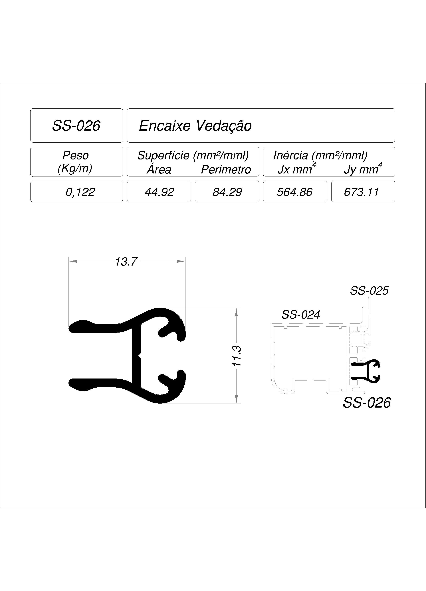
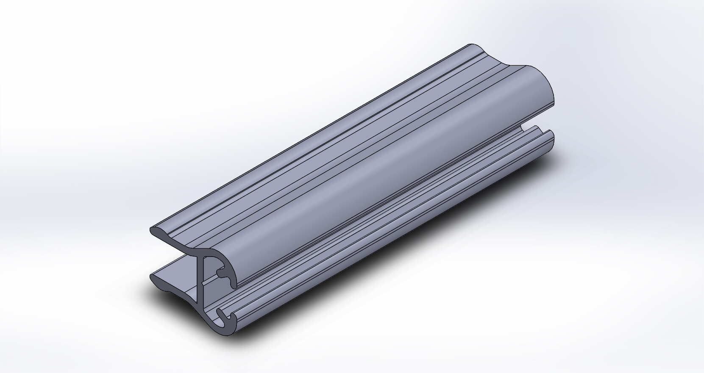

Perfil de alumínio
SS-026 — Encaixe Vedação
SS-026
Encaixe Vedação

abrir em tamanho original| Peso | 0,122 kg/m |
| Superfície — área | 44,92 mm²/mml |
| Superfície — perímetro | 84,29 mm²/mml |
| Inércia Jx | 564,86 mm⁴ |
| Inércia Jy | 673,11 mm⁴ |

VISTA ISOMÉTRICA · referência de apresentação